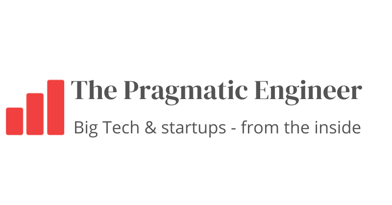
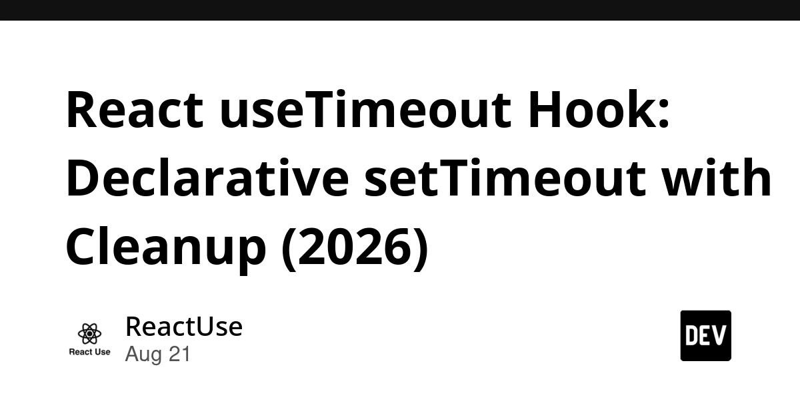
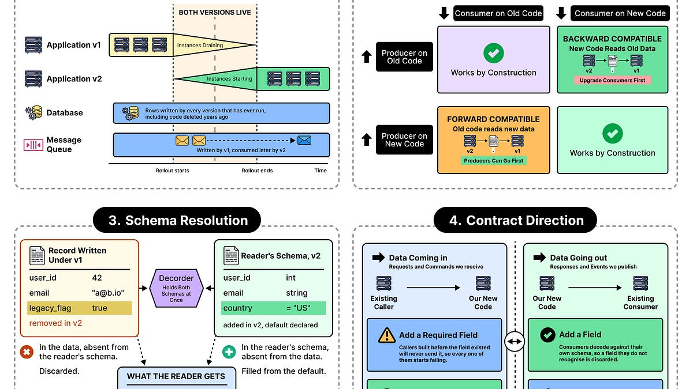
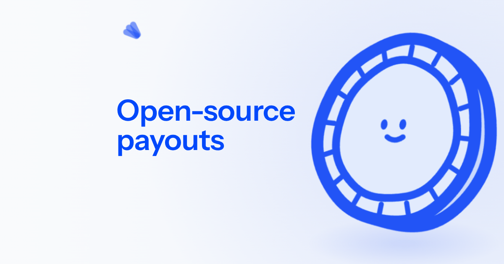
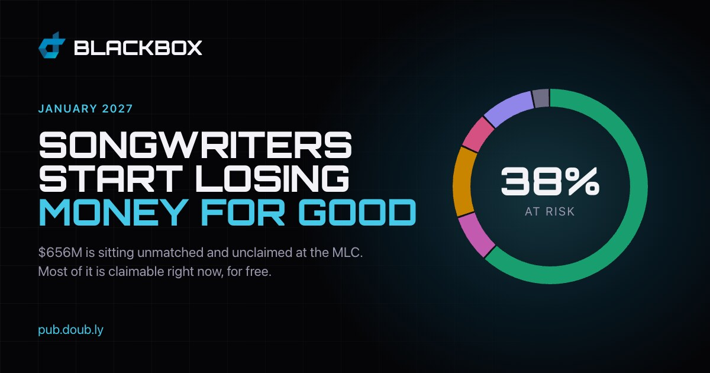

🔥 Top 3 (must read)
A shot-scraper-style JSON API on Bun 1.4's new Bun.WebView
Bun 1.4 is out, the first stable release since the Rust rewrite, and it ships a new
Bun.WebView API for driving a real browser view from JavaScript. Simon Willison already built a small screenshot/scraping JSON API on top of it as a demo. Matters to you: a big Node.js-alternative runtime release, and the WebView API could become a lightweight option for E2E-style browser automation.S
The August 17 outage, and the work ahead
GitHub explains what caused the August 17 outage and what they are changing to make the platform more reliable. It is a public postmortem (a report a company writes after an incident) with concrete follow-up work. Matters to you: a real-world reliability case study, and useful input if your CI or delivery process depends on GitHub.

The Pulse: Meta's self-inflicted resignation-wave
Meta's layoffs and forced reassignments pushed even untouched engineers to look for new jobs, and large equity retainers are not stopping the wave. A clear example of how restructuring destroys trust beyond the people directly affected. Matters to you as an EM: retention is about how changes are handled, not only about pay.

🛠 Tools & releases
React useTimeout Hook: Declarative setTimeout with Cleanup
walks through three real bugs in the classic "Copied!" button and fixes them with a small declarative
useTimeout hook.
🤖 AI for developers
Show HN: Huzzah – a novel approach to coding with AI
a different take on how to structure AI-assisted coding, with a lively debate in the HN thread (228 points, 134 comments). Worth a read if you are shaping how your team works with coding agents.
D
👔 Engineering & teams
Schema Evolution: Changing the Contract Without Breaking What Runs
ByteByteGo on strategies for changing data schemas (the agreed shape of your data) without breaking running services. Good system-design refresher for API and event contracts.

🎯 For me
Bun 1.4 (Top 3) is the day's biggest hit for your Node.js/TypeScript work — watch
Bun.WebView as a possible browser-automation building block.The
useTimeout hook article is a quick, practical React read you can share in code review.The Meta piece is the EM read of the day: forced reassignment without buy-in costs you the people you wanted to keep.
💡 App ideas & indie builds
I trained a 125M model to autocomplete piano on-device
a small local model that suggests the next notes while you play piano, like code autocomplete for music. Problem: practicing alone gives no ideas or feedback. Inspiring because it shows a tiny on-device model can power a delightful niche product — no cloud API needed.

Open-source Stripe Connect alternative
self-hosted marketplace payments (splitting money between a platform and its sellers). Problem: Stripe Connect lock-in and fees for marketplace builders. A reminder that "open-source alternative to X's expensive feature" is a durable app formula.

Check if any of the $656M in unclaimed royalties at The MLC is yours
a simple search over a public pile of unclaimed music royalties. Problem: money exists but owners don't know it. Great pattern: wrap a hard-to-search public dataset in a one-box search and the app markets itself.

A tool that turns resumes into portfolio websites
upload a resume, get a personal site. Problem: job seekers want a portfolio but won't build one by hand. Classic "turn a document people already have into something better" idea.
R
The AI app I built "just to learn" got acquired
ArtScan, an iOS art-scanner learning project, hit ~20k downloads and ~$10k/year on organic installs, then got acquired in July. Lesson for your own apps: accidental keyword ranking can carry a niche app; understand your organic channel before you scale.
R
🎓 Try this
Add the declarative
useTimeout hook to your React codebase and swap it into one "Copied!"-style button — it removes stale-closure and cleanup bugs you probably have today, and it takes about 15 minutes.